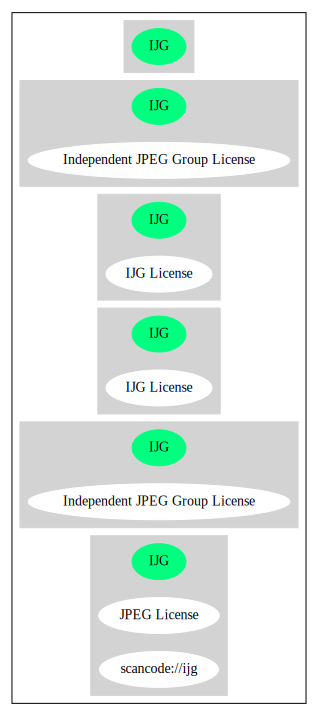

Key |
Value |
|---|---|
Fullname |
Independent JPEG Group License |
Shortname |
IJG |
Rating |
Unknown, probably Stop or No-Go |
Classification |
NoCopyleft |
Has Patent Hint |
True |
Other Names:
scancode://ijg
JPEG License
↓“Rating is: Lead” (source: BlueOak License List)
Homepage: http://fedoraproject.org/wiki/Licensing/IJG
SPDX: http://spdx.org/licenses/IJG.json
SPDX: https://spdx.org/licenses/IJG.html
http://dev.w3.org/cvsweb/Amaya/libjpeg/Attic/README?rev=1.2
http://www.gnu.org/licenses/license-list.html#GPLCompatibleLicenses
USE CASE Source code delivery
YOU MUST Forward Copyright notices
YOU MUST Forward License text
YOU MUST Forward Warranty disclaimer
YOU MUST NOT Appropriate
IF Software modification
YOU MUST Provide Modification report
YOU MUST Indemnify Original authors
YOU MUST NOT Promote
USE CASE Binary delivery
YOU MUST Credit Verbatim "This software is based in part on the work of the Independent JPEG Group"
PATENT HINTS Yes
(source: OSADL License Checklist)
LEGAL ISSUES
============
In plain English:
1. We don't promise that this software works. (But if you find any bugs,
please let us know!)
2. You can use this software for whatever you want. You don't have to pay us.
3. You may not pretend that you wrote this software. If you use it in a
program, you must acknowledge somewhere in your documentation that
you've used the IJG code.
In legalese:
The authors make NO WARRANTY or representation, either express or implied,
with respect to this software, its quality, accuracy, merchantability, or
fitness for a particular purpose. This software is provided "AS IS", and you,
its user, assume the entire risk as to its quality and accuracy.
This software is copyright (C) 1991-1998, Thomas G. Lane.
All Rights Reserved except as specified below.
Permission is hereby granted to use, copy, modify, and distribute this
software (or portions thereof) for any purpose, without fee, subject to these
conditions:
(1) If any part of the source code for this software is distributed, then this
README file must be included, with this copyright and no-warranty notice
unaltered; and any additions, deletions, or changes to the original files
must be clearly indicated in accompanying documentation.
(2) If only executable code is distributed, then the accompanying
documentation must state that "this software is based in part on the work of
the Independent JPEG Group".
(3) Permission for use of this software is granted only if the user accepts
full responsibility for any undesirable consequences; the authors accept
NO LIABILITY for damages of any kind.
These conditions apply to any software derived from or based on the IJG code,
not just to the unmodified library. If you use our work, you ought to
acknowledge us.
Permission is NOT granted for the use of any IJG author's name or company name
in advertising or publicity relating to this software or products derived from
it. This software may be referred to only as "the Independent JPEG Group's
software".
We specifically permit and encourage the use of this software as the basis of
commercial products, provided that all warranty or liability claims are
assumed by the product vendor.
ansi2knr.c is included in this distribution by permission of L. Peter Deutsch,
sole proprietor of its copyright holder, Aladdin Enterprises of Menlo Park, CA.
ansi2knr.c is NOT covered by the above copyright and conditions, but instead
by the usual distribution terms of the Free Software Foundation; principally,
that you must include source code if you redistribute it. (See the file
ansi2knr.c for full details.) However, since ansi2knr.c is not needed as part
of any program generated from the IJG code, this does not limit you more than
the foregoing paragraphs do.
The Unix configuration script "configure" was produced with GNU Autoconf.
It is copyright by the Free Software Foundation but is freely distributable.
The same holds for its supporting scripts (config.guess, config.sub,
ltconfig, ltmain.sh). Another support script, install-sh, is copyright
by M.I.T. but is also freely distributable.
It appears that the arithmetic coding option of the JPEG spec is covered by
patents owned by IBM, AT&T, and Mitsubishi. Hence arithmetic coding cannot
legally be used without obtaining one or more licenses. For this reason,
support for arithmetic coding has been removed from the free JPEG software.
(Since arithmetic coding provides only a marginal gain over the unpatented
Huffman mode, it is unlikely that very many implementations will support it.)
So far as we are aware, there are no patent restrictions on the remaining
code.
The IJG distribution formerly included code to read and write GIF files.
To avoid entanglement with the Unisys LZW patent, GIF reading support has
been removed altogether, and the GIF writer has been simplified to produce
"uncompressed GIFs". This technique does not use the LZW algorithm; the
resulting GIF files are larger than usual, but are readable by all standard
GIF decoders.
We are required to state that
"The Graphics Interchange Format(c) is the Copyright property of
CompuServe Incorporated. GIF(sm) is a Service Mark property of
CompuServe Incorporated."{
"__impliedNames": [
"IJG",
"Independent JPEG Group License",
"scancode://ijg",
"JPEG License"
],
"__impliedId": "IJG",
"__hasPatentHint": true,
"facts": {
"SPDX": {
"isSPDXLicenseDeprecated": false,
"spdxFullName": "Independent JPEG Group License",
"spdxDetailsURL": "http://spdx.org/licenses/IJG.json",
"_sourceURL": "https://spdx.org/licenses/IJG.html",
"spdxLicIsOSIApproved": false,
"spdxSeeAlso": [
"http://dev.w3.org/cvsweb/Amaya/libjpeg/Attic/README?rev=1.2"
],
"_implications": {
"__impliedNames": [
"IJG",
"Independent JPEG Group License"
],
"__impliedId": "IJG",
"__isOsiApproved": false,
"__impliedURLs": [
[
"SPDX",
"http://spdx.org/licenses/IJG.json"
],
[
null,
"http://dev.w3.org/cvsweb/Amaya/libjpeg/Attic/README?rev=1.2"
]
]
},
"spdxLicenseId": "IJG"
},
"OSADL License Checklist": {
"_sourceURL": "https://www.osadl.org/fileadmin/checklists/unreflicenses/IJG.txt",
"spdxId": "IJG",
"osadlRule": "USE CASE Source code delivery\n\tYOU MUST Forward Copyright notices\n\tYOU MUST Forward License text\n\tYOU MUST Forward Warranty disclaimer\n\tYOU MUST NOT Appropriate\n\tIF Software modification\n\t\tYOU MUST Provide Modification report\n\tYOU MUST Indemnify Original authors\n\tYOU MUST NOT Promote\nUSE CASE Binary delivery\n\tYOU MUST Credit Verbatim \"This software is based in part on the work of the Independent JPEG Group\"\nPATENT HINTS Yes\n",
"_implications": {
"__impliedNames": [
"IJG"
],
"__hasPatentHint": true
}
},
"Scancode": {
"otherUrls": [
"http://dev.w3.org/cvsweb/Amaya/libjpeg/Attic/README?rev=1.2",
"http://www.gnu.org/licenses/license-list.html#GPLCompatibleLicenses"
],
"homepageUrl": "http://fedoraproject.org/wiki/Licensing/IJG",
"shortName": "JPEG License",
"textUrls": null,
"text": "LEGAL ISSUES\n============\n\nIn plain English:\n\n1. We don't promise that this software works. (But if you find any bugs,\n please let us know!)\n2. You can use this software for whatever you want. You don't have to pay us.\n3. You may not pretend that you wrote this software. If you use it in a\n program, you must acknowledge somewhere in your documentation that\n you've used the IJG code.\n\nIn legalese:\n\nThe authors make NO WARRANTY or representation, either express or implied,\nwith respect to this software, its quality, accuracy, merchantability, or\nfitness for a particular purpose. This software is provided \"AS IS\", and you,\nits user, assume the entire risk as to its quality and accuracy.\n\nThis software is copyright (C) 1991-1998, Thomas G. Lane.\nAll Rights Reserved except as specified below.\n\nPermission is hereby granted to use, copy, modify, and distribute this\nsoftware (or portions thereof) for any purpose, without fee, subject to these\nconditions:\n(1) If any part of the source code for this software is distributed, then this\nREADME file must be included, with this copyright and no-warranty notice\nunaltered; and any additions, deletions, or changes to the original files\nmust be clearly indicated in accompanying documentation.\n(2) If only executable code is distributed, then the accompanying\ndocumentation must state that \"this software is based in part on the work of\nthe Independent JPEG Group\".\n(3) Permission for use of this software is granted only if the user accepts\nfull responsibility for any undesirable consequences; the authors accept\nNO LIABILITY for damages of any kind.\n\nThese conditions apply to any software derived from or based on the IJG code,\nnot just to the unmodified library. If you use our work, you ought to\nacknowledge us.\n\nPermission is NOT granted for the use of any IJG author's name or company name\nin advertising or publicity relating to this software or products derived from\nit. This software may be referred to only as \"the Independent JPEG Group's\nsoftware\".\n\nWe specifically permit and encourage the use of this software as the basis of\ncommercial products, provided that all warranty or liability claims are\nassumed by the product vendor.\n\n\nansi2knr.c is included in this distribution by permission of L. Peter Deutsch,\nsole proprietor of its copyright holder, Aladdin Enterprises of Menlo Park, CA.\nansi2knr.c is NOT covered by the above copyright and conditions, but instead\nby the usual distribution terms of the Free Software Foundation; principally,\nthat you must include source code if you redistribute it. (See the file\nansi2knr.c for full details.) However, since ansi2knr.c is not needed as part\nof any program generated from the IJG code, this does not limit you more than\nthe foregoing paragraphs do.\n\nThe Unix configuration script \"configure\" was produced with GNU Autoconf.\nIt is copyright by the Free Software Foundation but is freely distributable.\nThe same holds for its supporting scripts (config.guess, config.sub,\nltconfig, ltmain.sh). Another support script, install-sh, is copyright\nby M.I.T. but is also freely distributable.\n\nIt appears that the arithmetic coding option of the JPEG spec is covered by\npatents owned by IBM, AT&T, and Mitsubishi. Hence arithmetic coding cannot\nlegally be used without obtaining one or more licenses. For this reason,\nsupport for arithmetic coding has been removed from the free JPEG software.\n(Since arithmetic coding provides only a marginal gain over the unpatented\nHuffman mode, it is unlikely that very many implementations will support it.)\nSo far as we are aware, there are no patent restrictions on the remaining\ncode.\n\nThe IJG distribution formerly included code to read and write GIF files.\nTo avoid entanglement with the Unisys LZW patent, GIF reading support has\nbeen removed altogether, and the GIF writer has been simplified to produce\n\"uncompressed GIFs\". This technique does not use the LZW algorithm; the\nresulting GIF files are larger than usual, but are readable by all standard\nGIF decoders.\n\nWe are required to state that\n \"The Graphics Interchange Format(c) is the Copyright property of\n CompuServe Incorporated. GIF(sm) is a Service Mark property of\n CompuServe Incorporated.\"",
"category": "Permissive",
"osiUrl": null,
"owner": "IJG - Independent JPEG Group",
"_sourceURL": "https://github.com/nexB/scancode-toolkit/blob/develop/src/licensedcode/data/licenses/ijg.yml",
"key": "ijg",
"name": "Independent JPEG Group License",
"spdxId": "IJG",
"notes": null,
"_implications": {
"__impliedNames": [
"scancode://ijg",
"JPEG License",
"IJG"
],
"__impliedId": "IJG",
"__impliedCopyleft": [
[
"Scancode",
"NoCopyleft"
]
],
"__calculatedCopyleft": "NoCopyleft",
"__impliedText": "LEGAL ISSUES\n============\n\nIn plain English:\n\n1. We don't promise that this software works. (But if you find any bugs,\n please let us know!)\n2. You can use this software for whatever you want. You don't have to pay us.\n3. You may not pretend that you wrote this software. If you use it in a\n program, you must acknowledge somewhere in your documentation that\n you've used the IJG code.\n\nIn legalese:\n\nThe authors make NO WARRANTY or representation, either express or implied,\nwith respect to this software, its quality, accuracy, merchantability, or\nfitness for a particular purpose. This software is provided \"AS IS\", and you,\nits user, assume the entire risk as to its quality and accuracy.\n\nThis software is copyright (C) 1991-1998, Thomas G. Lane.\nAll Rights Reserved except as specified below.\n\nPermission is hereby granted to use, copy, modify, and distribute this\nsoftware (or portions thereof) for any purpose, without fee, subject to these\nconditions:\n(1) If any part of the source code for this software is distributed, then this\nREADME file must be included, with this copyright and no-warranty notice\nunaltered; and any additions, deletions, or changes to the original files\nmust be clearly indicated in accompanying documentation.\n(2) If only executable code is distributed, then the accompanying\ndocumentation must state that \"this software is based in part on the work of\nthe Independent JPEG Group\".\n(3) Permission for use of this software is granted only if the user accepts\nfull responsibility for any undesirable consequences; the authors accept\nNO LIABILITY for damages of any kind.\n\nThese conditions apply to any software derived from or based on the IJG code,\nnot just to the unmodified library. If you use our work, you ought to\nacknowledge us.\n\nPermission is NOT granted for the use of any IJG author's name or company name\nin advertising or publicity relating to this software or products derived from\nit. This software may be referred to only as \"the Independent JPEG Group's\nsoftware\".\n\nWe specifically permit and encourage the use of this software as the basis of\ncommercial products, provided that all warranty or liability claims are\nassumed by the product vendor.\n\n\nansi2knr.c is included in this distribution by permission of L. Peter Deutsch,\nsole proprietor of its copyright holder, Aladdin Enterprises of Menlo Park, CA.\nansi2knr.c is NOT covered by the above copyright and conditions, but instead\nby the usual distribution terms of the Free Software Foundation; principally,\nthat you must include source code if you redistribute it. (See the file\nansi2knr.c for full details.) However, since ansi2knr.c is not needed as part\nof any program generated from the IJG code, this does not limit you more than\nthe foregoing paragraphs do.\n\nThe Unix configuration script \"configure\" was produced with GNU Autoconf.\nIt is copyright by the Free Software Foundation but is freely distributable.\nThe same holds for its supporting scripts (config.guess, config.sub,\nltconfig, ltmain.sh). Another support script, install-sh, is copyright\nby M.I.T. but is also freely distributable.\n\nIt appears that the arithmetic coding option of the JPEG spec is covered by\npatents owned by IBM, AT&T, and Mitsubishi. Hence arithmetic coding cannot\nlegally be used without obtaining one or more licenses. For this reason,\nsupport for arithmetic coding has been removed from the free JPEG software.\n(Since arithmetic coding provides only a marginal gain over the unpatented\nHuffman mode, it is unlikely that very many implementations will support it.)\nSo far as we are aware, there are no patent restrictions on the remaining\ncode.\n\nThe IJG distribution formerly included code to read and write GIF files.\nTo avoid entanglement with the Unisys LZW patent, GIF reading support has\nbeen removed altogether, and the GIF writer has been simplified to produce\n\"uncompressed GIFs\". This technique does not use the LZW algorithm; the\nresulting GIF files are larger than usual, but are readable by all standard\nGIF decoders.\n\nWe are required to state that\n \"The Graphics Interchange Format(c) is the Copyright property of\n CompuServe Incorporated. GIF(sm) is a Service Mark property of\n CompuServe Incorporated.\"",
"__impliedURLs": [
[
"Homepage",
"http://fedoraproject.org/wiki/Licensing/IJG"
],
[
null,
"http://dev.w3.org/cvsweb/Amaya/libjpeg/Attic/README?rev=1.2"
],
[
null,
"http://www.gnu.org/licenses/license-list.html#GPLCompatibleLicenses"
]
]
}
},
"BlueOak License List": {
"BlueOakRating": "Lead",
"url": "https://spdx.org/licenses/IJG.html",
"isPermissive": true,
"_sourceURL": "https://blueoakcouncil.org/list",
"name": "Independent JPEG Group License",
"id": "IJG",
"_implications": {
"__impliedNames": [
"IJG"
],
"__impliedJudgement": [
[
"BlueOak License List",
{
"tag": "NegativeJudgement",
"contents": "Rating is: Lead"
}
]
],
"__impliedCopyleft": [
[
"BlueOak License List",
"NoCopyleft"
]
],
"__calculatedCopyleft": "NoCopyleft",
"__impliedURLs": [
[
"SPDX",
"https://spdx.org/licenses/IJG.html"
]
]
}
}
},
"__impliedJudgement": [
[
"BlueOak License List",
{
"tag": "NegativeJudgement",
"contents": "Rating is: Lead"
}
]
],
"__impliedCopyleft": [
[
"BlueOak License List",
"NoCopyleft"
],
[
"Scancode",
"NoCopyleft"
]
],
"__calculatedCopyleft": "NoCopyleft",
"__isOsiApproved": false,
"__impliedText": "LEGAL ISSUES\n============\n\nIn plain English:\n\n1. We don't promise that this software works. (But if you find any bugs,\n please let us know!)\n2. You can use this software for whatever you want. You don't have to pay us.\n3. You may not pretend that you wrote this software. If you use it in a\n program, you must acknowledge somewhere in your documentation that\n you've used the IJG code.\n\nIn legalese:\n\nThe authors make NO WARRANTY or representation, either express or implied,\nwith respect to this software, its quality, accuracy, merchantability, or\nfitness for a particular purpose. This software is provided \"AS IS\", and you,\nits user, assume the entire risk as to its quality and accuracy.\n\nThis software is copyright (C) 1991-1998, Thomas G. Lane.\nAll Rights Reserved except as specified below.\n\nPermission is hereby granted to use, copy, modify, and distribute this\nsoftware (or portions thereof) for any purpose, without fee, subject to these\nconditions:\n(1) If any part of the source code for this software is distributed, then this\nREADME file must be included, with this copyright and no-warranty notice\nunaltered; and any additions, deletions, or changes to the original files\nmust be clearly indicated in accompanying documentation.\n(2) If only executable code is distributed, then the accompanying\ndocumentation must state that \"this software is based in part on the work of\nthe Independent JPEG Group\".\n(3) Permission for use of this software is granted only if the user accepts\nfull responsibility for any undesirable consequences; the authors accept\nNO LIABILITY for damages of any kind.\n\nThese conditions apply to any software derived from or based on the IJG code,\nnot just to the unmodified library. If you use our work, you ought to\nacknowledge us.\n\nPermission is NOT granted for the use of any IJG author's name or company name\nin advertising or publicity relating to this software or products derived from\nit. This software may be referred to only as \"the Independent JPEG Group's\nsoftware\".\n\nWe specifically permit and encourage the use of this software as the basis of\ncommercial products, provided that all warranty or liability claims are\nassumed by the product vendor.\n\n\nansi2knr.c is included in this distribution by permission of L. Peter Deutsch,\nsole proprietor of its copyright holder, Aladdin Enterprises of Menlo Park, CA.\nansi2knr.c is NOT covered by the above copyright and conditions, but instead\nby the usual distribution terms of the Free Software Foundation; principally,\nthat you must include source code if you redistribute it. (See the file\nansi2knr.c for full details.) However, since ansi2knr.c is not needed as part\nof any program generated from the IJG code, this does not limit you more than\nthe foregoing paragraphs do.\n\nThe Unix configuration script \"configure\" was produced with GNU Autoconf.\nIt is copyright by the Free Software Foundation but is freely distributable.\nThe same holds for its supporting scripts (config.guess, config.sub,\nltconfig, ltmain.sh). Another support script, install-sh, is copyright\nby M.I.T. but is also freely distributable.\n\nIt appears that the arithmetic coding option of the JPEG spec is covered by\npatents owned by IBM, AT&T, and Mitsubishi. Hence arithmetic coding cannot\nlegally be used without obtaining one or more licenses. For this reason,\nsupport for arithmetic coding has been removed from the free JPEG software.\n(Since arithmetic coding provides only a marginal gain over the unpatented\nHuffman mode, it is unlikely that very many implementations will support it.)\nSo far as we are aware, there are no patent restrictions on the remaining\ncode.\n\nThe IJG distribution formerly included code to read and write GIF files.\nTo avoid entanglement with the Unisys LZW patent, GIF reading support has\nbeen removed altogether, and the GIF writer has been simplified to produce\n\"uncompressed GIFs\". This technique does not use the LZW algorithm; the\nresulting GIF files are larger than usual, but are readable by all standard\nGIF decoders.\n\nWe are required to state that\n \"The Graphics Interchange Format(c) is the Copyright property of\n CompuServe Incorporated. GIF(sm) is a Service Mark property of\n CompuServe Incorporated.\"",
"__impliedURLs": [
[
"SPDX",
"http://spdx.org/licenses/IJG.json"
],
[
null,
"http://dev.w3.org/cvsweb/Amaya/libjpeg/Attic/README?rev=1.2"
],
[
"SPDX",
"https://spdx.org/licenses/IJG.html"
],
[
"Homepage",
"http://fedoraproject.org/wiki/Licensing/IJG"
],
[
null,
"http://www.gnu.org/licenses/license-list.html#GPLCompatibleLicenses"
]
]
}